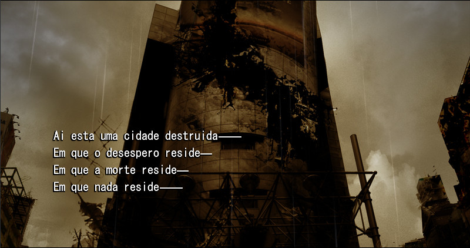
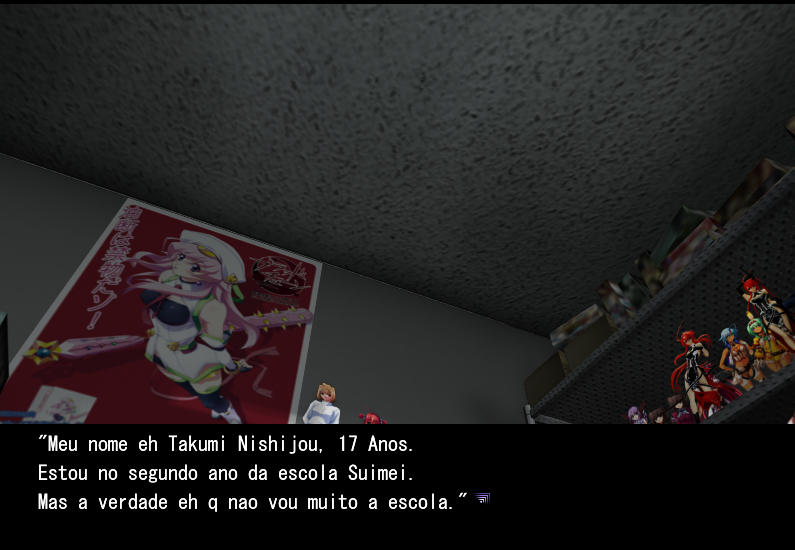

Este post é dedicado para falar sobre o projeto de tradução de Chaos;Head, que teve inicio a algumas semanas atrás e atualmente esta com sua "rota" principal com 15% dos arquivos traduzidos.
O jogo tem 3 "rotas" no total, porém seria mais correto dizer que sao apenas finais diferentes. A tradução conta com um problema que até agora, e possivelmente nunca, vai ter uma solução, tal problema é a ausencia dos acentos e "ç", isso acontece devido a fonte do jogo, que nao reconhece os caracteres com acento e "ç", levando isso em consideração, todos os "é" do jogo foram trocados para "eh" a fim de facilitar a leitura. Tirando isso, a tradução está sem nenhum outro problema.

Eu pretendo tarduzir totalmente o jogo, isso inclui todas as cutscenes, openings, endings e imagens. O jogo tem no total 221 arquivos de texto para traduzir, atualmente, 32 desses 221 estao traduzidos, caso tenha interesse em se tornar um tradutor, revisor ou editor da fansub, é so me mandar mensagen no discord uwu A estimativa de terminio do projeto é de 2 meses, porém, pode ser mais rapido ou demorar mais dependendo do que acontecer.
"Esses olhos, de quem são eles?"